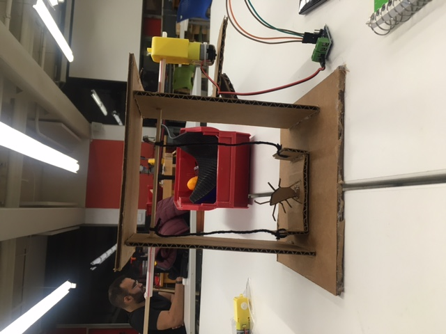
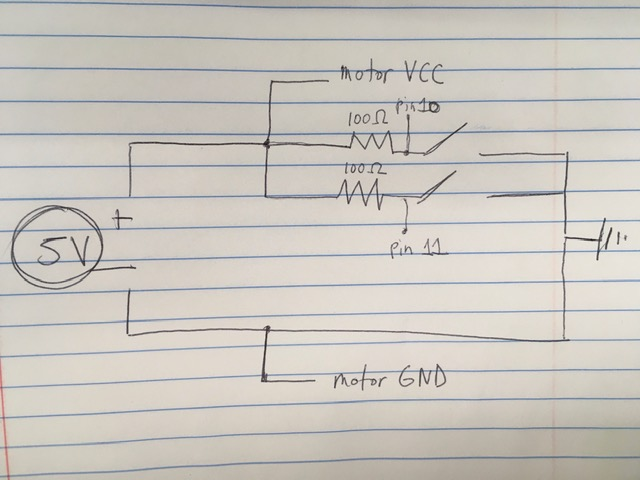
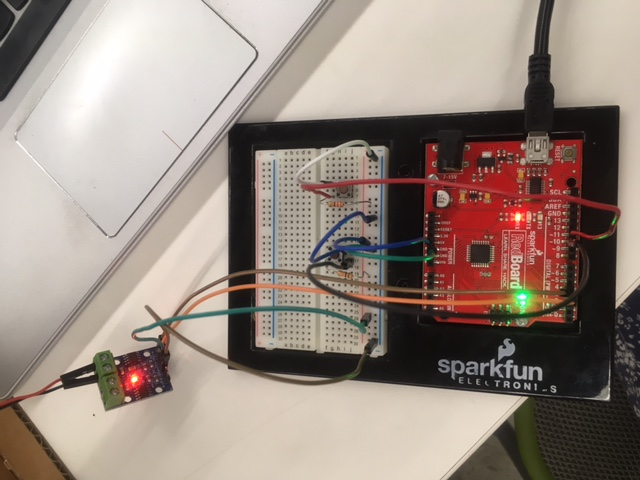
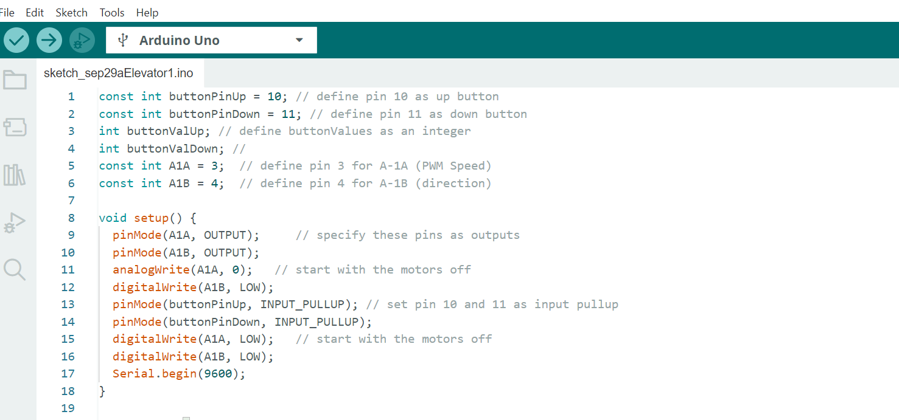
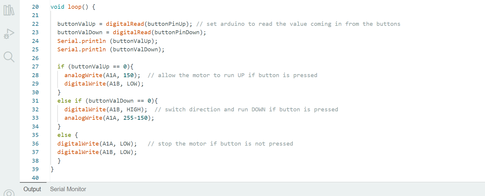

<br>
#### Week 4: Microcontroller Programming
This week, we learned the basics of microcontroller programming, and I used what I learn to make a circuit that controls my cockroack elevator. I also built my cockroach elevator and made it work!
First, I measured and cut pieces of cardboard and glued them together. Instead of using a pulley system, like I thought I would in my sketch from last week, I decided to simply attach the motor directly to the rod that moves the platform up and down. I used heatshrink to tightly connect the rod to the motor and covered it with a straw. I built a little ledge for the motor to rest on, tied the platform to the rod with yarn, and made a tiny cardboard cockroach to sit on the platform.

The next step was to design and build the circuit.
I decided to use a very simple circuit, with one UP button and one DOWN button, implementing the pull-up resistor method. Here is a schematic for my circuit.

Additionally, though it's not shown in the schematic, pin3 of the Arduino is connected to A1A on the motor and pin4 of the Arduino is connected to A1B on the motor, in order to control the speed with Pulse Width Modulation and the direction of the elevator's movement. Here is a photo of the circuit.

I adapted Nathan's code for running the motor with PWM and direction changes by adding lines that let the buttons control the up and down movement. Pin 10 on the Arduino reads whether the UP button is pressed, and Pin 11 reads whether the DOWN button is pressed.


I was so excited when I got my cockroach elevator to work!!!
<video width="270" height="430" controls>
<source src="elevator.mp4" type="video/mp4">
Your browser does not support the video tag.
</video>